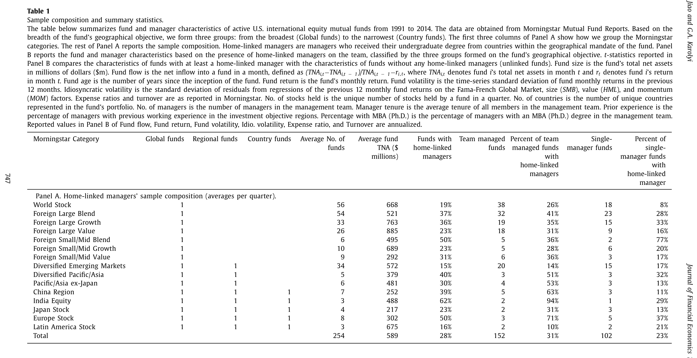
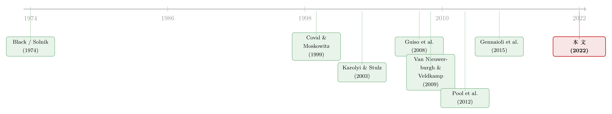

在全球市场里，「老乡」基金经理算不算一种主场优势？
本文读的是 Jagannathan, Jiao & Karolyi (2022, Journal of Financial Economics)：美国的国际股票基金越来越爱雇「在投资目的地长大」的经理，这些「同乡经理」会显著超配自己的母国股票，并且能吸引更多资金。作者发现这些经理管理的母国持仓确实跑赢同行，却始终找不到一个具体的「信息优势」来源；真正能被数据坐实的，是投资者对他们的信任——而且主要是靠过去的好业绩挣来的信任。
1 一个不该存在的偏好
先讲一个理论上「不该发生」的故事。
从上世纪七十年代起，国际资产定价的经典模型——Black (1974)、Solnik (1974)、Stulz (1981)、Adler 和 Dumas (1983)——描绘的都是同一幅图景：一个全球一体化的市场，资产无论在哪里交易都是同一个价格，没有什么金融是「本地的」。在这幅图景里，理性的投资者应当把钱撒向全球，按市值持有世界组合，享受分散化的免费午餐。事实上人们也确实在分散：截至 2018 年底，美国居民持有的境外股债高达 11.3 trillion 美元，是 2008 年的三倍；其中一个最受欢迎的通道就是国际股票共同基金，2.4 trillion 美元的规模，占到全部股票基金资产的 26%。
可是，分散化的理想和现实之间，一直横着一道挥之不去的裂缝——本土偏好 (home bias)。投资者总是过度持有自己熟悉的、近在身边的资产。这件事在国别之间普遍存在（Karolyi 和 Stulz, 2003；Lewis, 2011），甚至在一国内部也存在：美国基金经理偏爱本州、本市的公司（Coval 和 Moskowitz, 1999；Pool et al., 2012）。
那么问题来了：本土偏好究竟是因为「内行有信息」，还是仅仅因为「熟悉所以偏爱」？ 这是一场争了二十多年的公案。Coval 和 Moskowitz (2001) 站在「信息」一边——基金经理偏爱本地公司，尤其是那些小盘、高杠杆、生产非贸易品的公司，而且这些偏好能换来超额收益。Pool et al. (2012) 则站在「熟悉」一边——他们发现美国经理确实超配本州股票，但这些被超配的股票并不带来更好的业绩，所以那更像是一种「眼熟就买」的行为偏差，而非真本事。
本文的第一步，就是把这个旧问题搬到一个全新的、也更「锋利」的实验场里：国际共同基金的职业经理人。
2 谁是「同乡经理」
作者翻看了 Morningstar 的基金经理档案，挖出一个此前没人系统研究过的事实：管理美国国际股票基金的人里，有高达 28% 是在美国之外长大的；而且这个比例在过去 25 年里一路上升。更耐人寻味的是，这些外籍经理中有 80% 管的基金，其地理投资范围恰好包含了他们自己的母国。
这就引出了全文的核心概念。作者把「母国被基金投资范围覆盖」的外籍经理，称为同乡经理 (home-linked manager)，他们管的基金叫同乡基金 (home-linked fund)。一个中国区基金，如果由一位中国本科毕业的经理掌舵，那这只基金就是「同乡基金」；但若由美国本科毕业的人来管，则不算。
识别策略的关键，正落在「如何认定一个人的母国」上。作者用的是一个干净但并不完美的代理变量：经理获得本科学位 (undergraduate degree) 的国家。这个变量来自 Morningstar 的管理层简历。作者很坦诚地承认其局限——一个人的出生地、居住地、国籍，都可能和他读本科的国家不一致；信息、熟悉、信任这些优势也可能来自留学之外的渠道。但比起出生地这种几乎无法系统获取的信息，本科国别是可观测、可复现的。
接着，一个自然的问题是：不同基金的地理「胃口」差别很大，怎么比较？作者借 Morningstar 的分类，把基金按地理范围由窄到宽分成三档——国别基金 (Country)（如日本、欧洲、印度、中国区、拉美）、区域基金 (Regional)（如新兴市场、亚太）、以及最宽泛的全球基金 (Global)。范围越窄，「同乡」这件事的「浓度」或「强度」就越高，这给了作者一个天然的强度梯度去做检验。
3 数据
- 数据来源：基金经理信息、教育与履历、基金回报、持仓与基金层面特征均来自
Morningstar；个股回报来自 Thomson Reuters 的Datastream International与CRSP；财务报表来自Worldscope与Compustat。（关于 Morningstar 这套基金数据的特点，可参见《Mutual Fund》。） - 观测单位与样本：主动管理的美国国际股票基金，季度频率。最终样本为
24,422个基金-季度观测、1090只独立基金，区间1991–2014。 - 经理样本：
1855位经理来自40个国家，其中529位在美国之外获得本科学位，435位是同乡经理。母国分布高度集中在英国（222位经理，169位同乡）。 - 规模：平均每季度约有
254只国际基金有可用数据；整体平均基金净资产（TNA）约589 million美元。

Table 1
4 第一击：同乡经理有多偏爱母国？
结果毫不含糊，而且经济意义巨大。
同乡经理把比同类经理多出约 14% 的股票资产投到了母国股票上。而且这个超配随着「同乡浓度」单调放大：到了区域基金是 22%，到了国别基金更高达 30%。
然后，一个更有意思的横截面结构浮现了：这种母国超配，在新兴市场出身的经理、来自信息披露与治理较弱国家的经理、以及文化上离美国更远的经理身上更为显著。
读到这里，你很容易顺水推舟地得出一个结论：语言、文化、制度质量，本就是「信息禀赋」的组成部分（Van Nieuwerburgh 和 Veldkamp, 2009）；同乡经理在这些「信息质量差」的地方超配得最凶，不正说明他们手里攥着别人没有的信息吗？
但真正关键的一步在于：作者没有就此打住。他们清楚，「在哪里超配」只能告诉你偏好长什么样，回答不了为什么。要分清「信息优势」「熟悉」和「信任」这三种动机，必须接着去看——这些超配到底赚不赚钱，以及投资者用脚投票的方式。
5 第二击：这些母国持仓，到底赚不赚钱？
作者从两个层面量业绩。
基金层面，他们构造了一个「基金的基金」多空组合：买入所有有同乡经理的基金、卖空没有同乡经理的基金，再用 Fama 和 French (2012, 2017) 的全球四因子、六因子模型算 alpha。结论是：区域/国别同乡基金有显著的超额表现，而全球基金的证据偏弱。
证券层面才是更锋利的一刀。作者构造了「仿真日历组合 (as-if calendar-time portfolios)」：模仿同乡基金在其母国股票上的配置，相对于同类别中非同乡基金持有的同一国股票。组合按两种方式排序——(a) 季度初的实际持仓，(b) 季度内持仓的变化。后者还把「正向变化（约等于买入）」「负向变化（卖出）」「不变（持有）」区分开来。
结果是：按持仓排序，全球、区域、国别基金都呈现可靠为正、且经济上很大的 alpha，区间在每月 31 到 65 个基点。而按持仓变化排序时，业绩优势集中在买入端——买入组合每月 alpha 高达 82 个基点，卖出和持有组合的 alpha 则不显著。
这一步至关重要。它说明：让同乡基金跑赢的，恰恰是经理们在母国股票上的主动配置，而且优势体现在「他们决定买什么」上。这就把超额收益和「母国持仓」牢牢绑在了一起，而不是别的什么风格暴露。
6 反转：找不到那个「信息优势」的出处
到这里，故事看起来正朝着「信息优势」一边倒。但作者偏要刨根问底——如果真有信息优势，它到底从哪儿来？ 于是出现了全文最漂亮的几个「证伪」动作：
- 他们把仿真组合按经理母国拆开，发现业绩收益集中在新兴市场、弱披露弱治理、文化更远的国家——这和持仓偏好的分布一致，看似支持「信息禀赋」。
- 然后，他们从 LinkedIn 手工收集了同乡经理的工作地点（在母国还是在海外、现在还是过去）。如果信息来自当地的社交网络（Cohen et al., 2008 强调的渠道），那么「在母国工作过」的人应当更有优势。可数据说：那些从没在母国工作过的人，业绩并不比一直在母国的人差，甚至更好。 社交网络这条线被掐断了。
- 他们还检验了择时能力 (country-timing)——如果优势来自对当地资本市场或宏观环境的更好把握，应当能在国家配置的时点上看出来。结果是：同乡经理并无特殊的择国择时本领。
一条条排查下来，作者最后只能很诚实地写下：他们无法识别出一个具体的信息优势来源。母国持仓确实赚钱，但「为什么赚钱」始终抓不住把柄。
这正是本文区别于以往「信息 vs 熟悉」之争的地方：它不满足于「显著为正」，而是把「信息优势」这个假说逼到了墙角——你说有，那它在哪儿？
7 真正的主角：信任，以及「挣来的」与「禀赋的」之分
既然信息优势抓不住，那投资者为什么还要追着同乡基金跑？作者把镜头转向了资金流 (fund flows)，并在这里给出了全文最有分量的概念贡献。
先看事实：同乡基金显著吸引更多资金，区域同乡基金平均每年多吸金 6.42%。为了让识别更干净，作者还盯住了经理更替事件 (manager turnover)——一旦新聘了一位同乡经理，接下来四个季度的资金流相对其他经理聘任显著上升；而同乡经理离任后，资金流则随之回落。这是一个更接近「事件研究」的设计，缓解了基金层面不可观测特征的混淆。
但真正的智慧，在于信任的两分法。作者把信任的概念学问追溯到 Guiso et al. (2004, 2008)：信任是个体赋予「自己会被欺骗」这件事的主观概率，可以是「泛化的」普遍信任态度，也可以是「人格化的」指向某个明确对象的信任。在此之上，作者做了一个关键区分：
- 挣来的信任 (earned trust)：投资者本就相信同乡经理有信息或熟悉度优势，于是哪怕只看到一点点超额业绩、或一点点母国超配，就会印证先验、强化人格化信任（Guiso et al., 2008），从而追加投资。这对应 Gennaioli et al. (2015) 之外、更看重「过往行动」的那种信任。
- 禀赋的信任 (endowed trust)：投资者选择这只基金，本就和它过去的业绩、过去的持仓无关——信任更多来自降低焦虑、个人关系、广告说服、整体的熟悉感（Gennaioli et al., 2015 的「信任降低承担风险的效用成本」）。
怎么把这两种信任在数据里分开？作者的招数是看资金流对业绩的敏感度 (flow-performance sensitivity)，尤其是它的不对称性：
- 对全球基金，同乡身份并没有带来额外的「资金流-业绩/偏好」敏感度——说明它们吸金主要靠禀赋信任；而且它们对负向过往业绩的敏感度被削弱了：业绩不好时投资者也不太撤资，宁愿守着信得过的经理。这正是禀赋信任的标志。
- 对区域/国别基金，同乡身份显著抬高了资金流-业绩敏感度，而且这种抬升集中在过往的正向业绩上——好业绩被放大成更多资金。这正是挣来的信任：业绩印证先验，先验再转化为投入。此外，这些基金的资金流还和过去母国偏好水平的变化正相关，超出了正向业绩敏感度本身。
（资金追着过往业绩跑，本身是基金研究里的老话题；关于散户如何被「去年的收益」牵着鼻子走，可参见《钱追着「去年的收益」跑》。本文的新意在于：它把这种追逐，重新解读成「信任如何被业绩挣来」的微观机制。）
8 收尾：既然有好处，为什么不是人人都雇同乡经理？
一篇好论文不会停在「同乡经理有优势」就鸣金收兵。作者追问了一个均衡层面的问题：如果雇同乡经理有这么多好处，为什么不是所有基金都这么干？
- 一种猜测是：过度超配母国会限制基金规模，进而压低经理自己的薪酬（毕竟经理是按管理资产的绝对回报、而非收益率领薪的，Berk 和 Van Binsbergen, 2015）。但数据否定了这点——同乡经理创造的增加值 (value added) 显著高于同行，费率也没有差别。「怕做不大」不是答案。
- 真正起作用的是选择效应 (selection effects)：当信息、熟悉、信任在那些「外资准入更严、治理更弱、政治不确定性更高」的国家更值钱时，这类国家出身的同乡经理就会更多地被需要、被雇佣——这是需求侧的力量。
- 而供给侧则受劳动力约束。作者用各国-年度授予的 CFA 持证人数作为代理，发现这一约束确实会卡住同乡经理的招聘，尽管需求摆在那里。
一推一拉之间，选择效应解释了为什么「同乡经理」既珍贵又稀缺。
9 文献脉络
把这条线索捋一捋，会看到一个很清晰的演进。
起点是七十年代国际资产定价的整合论——Black (1974)、Solnik (1974)、Stulz (1981)——它们预言「没有金融是本地的」。接着，现实给了理论一记耳光：本土偏好无处不在，无论是跨国（Karolyi 和 Stulz, 2003；Lewis, 2011），还是一国之内（Coval 和 Moskowitz, 1999；Pool et al., 2012）。然后，争论的焦点转向动机——是信息（Coval 和 Moskowitz, 2001），还是熟悉（Pool et al., 2012）？在国际场景里，Chan et al. (2005) 用距离、语言、文化、殖民史等「熟悉度」变量解释了跨境投资，而 Van Nieuwerburgh 和 Veldkamp (2009) 则把信息不流动写成了本土偏好之谜的解释。
与此同时，另一条几乎平行的线索悄然生长——信任。从 Arrow (1972) 对「几乎每笔交易都含有信任成分」的洞见，到 La Porta et al. (1997) 对大型组织中信任的度量，再到 Guiso et al. (2004, 2008) 把信任正式化为「被欺骗的主观概率」、Gennaioli et al. (2015) 把信任写进投资者承担风险的效用、Gurun et al. (2018) 展示麦道夫骗局后「信任」如何护住了某些顾问的资金，以及 Kumar et al. (2015) 发现「听起来像外国人的名字」会减少资金流入。
这篇论文恰好站在这两条线索的交汇处：它借国际共同基金这个锋利的实验场，先把「信息优势」假说逼到无处藏身，再把「信任」从抽象概念落到可识别的资金流不对称性上，并进一步劈成「挣来的」与「禀赋的」两半。

10 评论与延伸（Q&A + 研究方向）
(a) 几个可能的疑问
Q：用「本科国别」当母国，会不会把人认错？
会，作者自己也承认。出生、居住、国籍都可能和读本科的国家不一致，这会引入测量误差。但测量误差通常使估计衰减（偏向于零），因此真实的母国偏好与业绩效应只会比文中报告的更强而非更弱；而且本科国别的好处是可观测、可复现。它牺牲了一点精度，换来了样本的系统性。
Q：母国持仓跑赢，难道不就证明了信息优势吗？
「跑赢」只说明这些持仓事后赚了钱，不等于经理事前掌握了别人没有的信息。作者一连串的证伪——社交网络（在不在母国工作无所谓）、择时能力（没有）、信息源（找不到具体出处）——恰恰是为了把「赚钱」和「信息优势」解耦。超额收益也可能来自风险补偿、熟悉度带来的更优选股，或别的尚未识别的渠道。
Q：「挣来的信任」和单纯的「追逐业绩」有什么区别？
区别在机制。普通的资金流-业绩敏感度对所有基金都存在；本文要看的是同乡身份带来的额外敏感度，而且它只出现在区域/国别基金、只集中在正向业绩上。这说明业绩在这里扮演的是「印证先验、激活人格化信任」的角色，而非单纯的回报外推。
Q：「禀赋信任」会不会只是投资者的非理性粘性？
有这种可能，但作者给的证据是结构化的：全球同乡基金对负向业绩的敏感度被削弱（业绩差也不撤资），而对正向业绩没有额外敏感度。这种「只在下行端粘住」的不对称，正符合「信任降低焦虑、让人愿意守着」的禀赋信任刻画，而不是无差别的迟钝。
Q：经理更替事件能解决内生性吗？
它比横截面回归更干净，因为它在同一只基金内部、围绕一次人事变动看资金流的前后变化，吸收了基金固定特征。但它仍非随机实验——基金选择「此时聘一位同乡经理」本身可能与未观测的需求冲击相关，作者也正是用选择效应那一节来正面回应这种内生的雇佣决策。
Q：这对「全球一体化」的经典图景意味着什么？
意味着即便壁垒在降、资本在全球流动，资产管理这个环节里仍嵌着浓厚的「人」的因素——母国身份既塑造了组合选择，也塑造了投资者的信任。金融并非如理论所言那般「无国界」，至少在委托代理的中介层面不是。
(b) 几个可能的研究问题与提案
1. 把「同乡经理」搬到公司债/信用市场
【经济故事】本文全在股票基金。但信用市场的信息不对称更严重、定价更依赖对当地违约文化与债权人保护的理解，「同乡」的价值可能更大。外资持有人结构对公司债流动性的影响，本就是一个活跃的问题。 【可行性】中。需要把基金经理母国信息（Morningstar/LinkedIn）匹配到国际债券基金持仓（Morningstar、eMAXX/Lipper），并用 TRACE 之外的跨国债券交易数据度量流动性。识别可沿用本文的经理更替事件法。难点在于跨国债券持仓与交易数据的覆盖与匹配质量。
2. 同乡经理与母国资产的流动性
【经济故事】如果同乡经理更偏爱、也更敢于持有母国股票/债券，他们的进出可能成为这些资产流动性的「稳定器」或「放大器」——尤其在危机期。这直接连到外资持有人与流动性的关系。 【可行性】中。可用本文的同乡基金标签，配合个券层面的买卖价差、Amihud 等流动性指标，在压力期（如 2008、2011 欧债、2020）做事件研究。识别上可借助同乡持仓占比的横截面差异。
3. 「禀赋信任」是否让同乡基金在危机中更抗赎回？
【经济故事】本文发现全球同乡基金对负向业绩的赎回敏感度更低。一个自然延伸：在系统性冲击下，这种「粘性」是缓解了被迫抛售、稳定了价格，还是延缓了不良基金的出清、滋生了道德风险？ 【可行性】高。资金流与业绩数据现成，只需在冲击窗口内比较同乡与非同乡基金的赎回-业绩敏感度及其对持仓抛售的传导。识别清晰，doable。
4. CFA 供给约束作为同乡经理的工具变量
【经济故事】本文已用各国-年度 CFA 持证人数刻画劳动力供给约束。它与基金回报无直接关系、却影响同乡经理的可得性，天然具备工具变量的味道。 【可行性】中。可用 CFA 授予数（按国家×年度）作为同乡经理聘任的工具，估计同乡经理对业绩/资金流的因果效应。难点在排他性约束——CFA 供给可能与当地资本市场发展同步变化，需要额外控制。
5. 名字、信任与资金流的交互
【经济故事】Kumar et al. (2015) 发现「外国名字」减少资金流入（taste-based 歧视），本文发现同乡身份增加资金流入（信任）。当一位经理「名字像外国人」却「正是该地区的同乡」时，歧视与信任会如何对冲？ 【可行性】中。需要构造名字的「外国感」评分（已有方法）并与同乡标签交互，看资金流如何响应。数据可得，识别依赖名字外生于业绩这一假设，需小心处理。
11 我的判断
这篇论文的贡献，我认为不在某个惊人的系数，而在一套层层递进的证伪逻辑。它没有像许多文献那样满足于「本土偏好 + 超额收益 = 信息优势」的便捷叙事，而是耐着性子，把「信息优势」这个假说从社交网络、择时能力、信息源头三个方向逐一逼问，最后老老实实承认「抓不住」，再转身把「信任」从一个软绵绵的词，拆成了「挣来的」与「禀赋的」两个可被资金流不对称性识别的硬概念。这种先证伪、再正面立论的诚实，是它最值得学的地方。
对识别，我有两点保留。其一，母国 = 本科国别这个代理虽便于复现，但它把「文化禀赋、家庭背景、母语」全压进了一个变量；当母国超配在「文化更远、治理更弱」的国家最强时，我们很难区分这是「信息禀赋」还是「读本科时建立的本地关系网」——而后者恰恰是作者想排除的渠道，LinkedIn 的工作地点只覆盖了关系网的一部分。其二，雇佣决策的内生性。经理更替事件缓解了基金固定特征，但「为什么这只基金在这个时点雇同乡经理」本身可能与未观测的资金需求冲击同源；选择效应那一节是在解释这种内生，而非清除它。
后续我最想看到的，是把这套「信息 vs 信任」的解剖刀搬进信用市场和外资持有人——在那里，定价更依赖对当地违约文化的理解、流动性也更脆弱，「同乡」的价值与代价或许都会被放大，而这恰是离我自己的研究最近的一块。
参考文献
- Adler, M., Dumas, B. (1983). International portfolio choice and corporation finance: a synthesis. Journal of Finance 38, 925–984.
- Arrow, K. (1972). Gifts and exchanges. Philosophy & Public Affairs 1, 343–362.
- Berk, J., Van Binsbergen, J. (2015). Measuring skill in the mutual fund industry. Journal of Financial Economics 118, 1–20.
- Black, F. (1974). International capital market equilibrium with investment barriers. Journal of Financial Economics 1, 337–352.
- Brennan, M., Cao, H. (1997). International portfolio investment flows. Journal of Finance 52, 1851–1880.
- Chan, K., Covrig, V., Ng, L. (2005). What determines the domestic bias and foreign bias? Evidence from mutual fund equity allocations worldwide. Journal of Finance 60, 1495–1534.
- Gennaioli, N., Shleifer, A., Vishny, R. (2015). Money doctors. Journal of Finance 70, 91–114.
- Guiso, L., Sapienza, P., Zingales, L. (2008). Trusting the stock market. Journal of Finance 63, 2557–2600.
- Gurun, U.G., Stoffman, N., Yonker, S.E. (2018). Trust busting: the effect of fraud on investor behavior. Review of Financial Studies 31, 1341–1376.
- Karolyi, G.A., Stulz, R.M. (2003). Are financial assets priced locally or globally? In Handbook of the Economics of Finance, Ch. 16. Elsevier North-Holland.
- Kumar, A., Niessen-Ruenzi, A., Spalt, O.G. (2015). What's in a name? Mutual fund flows when managers have foreign-sounding names. Review of Financial Studies 28, 2281–2321.
- La Porta, R., Lopez-de-Silanes, F., Shleifer, A., Vishny, R.W. (1997). Trust in large organizations. American Economic Review 87, 333–338.
- Lewis, K. (2011). Global asset pricing. Annual Review of Financial Economics 3, 435–466.
- Pool, V.K., Stoffman, N., Yonker, S.E. (2012). No place like home: familiarity in mutual fund manager portfolio choice. Review of Financial Studies 25(8), 2563–2599.
- Solnik, B. (1974). An equilibrium model of the international capital market. Journal of Economic Theory 8, 500–524.
- Stulz, R. (1981). On the effects of barriers to international investment. Journal of Finance 36, 923–934.
- Van Nieuwerburgh, S., Veldkamp, L. (2009). Information immobility and the home bias puzzle. Journal of Finance 64, 1187–1215.